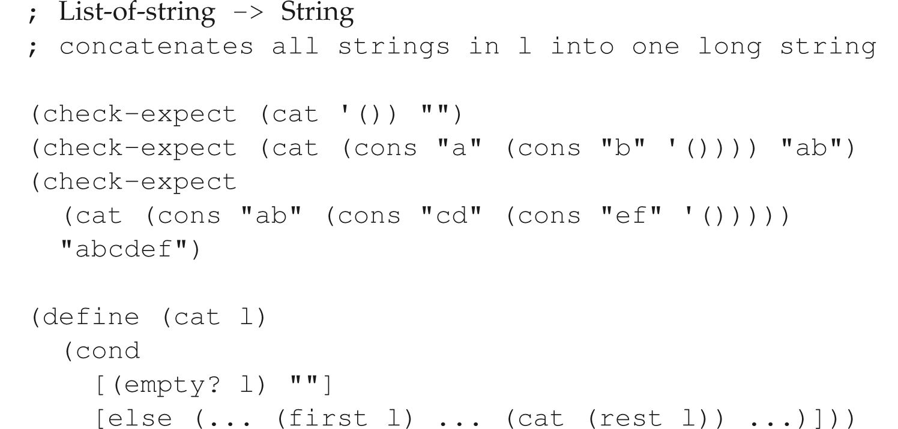
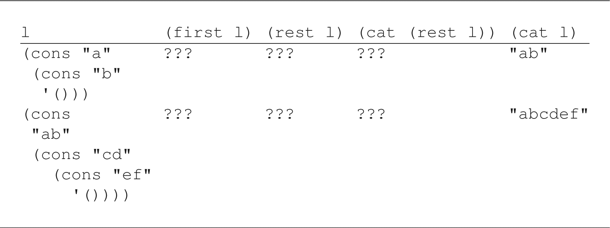

9.1 Finger Exercises: Lists
Exercise 137. Compare the template for contains-flatt? with the one for how-many. Ignoring the function name, they are the same. Explain the similarity. 
Exercise 138. Here is a data definition for representing sequences of amounts of money:
; A List-of-amounts is one of:
; -- '()
; -- (cons PositiveNumber List-of-amounts)
Create some examples to make sure you understand the data definition. Also add an arrow for the self-reference.
Design the sum function, which consumes a List-of-amounts and computes the sum of the amounts. Use DrRacket’s stepper to see how (sum l) works for a short list l in List-of-amounts.
Exercise 139. Now take a look at this data definition:
; A List-of-numbers is one of:
; -- '()
; -- (cons Number List-of-numbers)
Some elements of this class of data are appropriate inputs for sum from exercise 138 and some aren’t.
Design the function pos?, which consumes a List-of-numbers and determines whether all numbers are positive numbers. In other words, if (pos? l) yields #true, then l is an element of List-of-amounts. Use DrRacket’s stepper to understand how pos? works for (cons 5 '()) and (cons -1 '()).
Also design checked-sum. The function consumes a List-of-numbers. It produces their sum if the input also belongs to List-of-amounts; otherwise it signals an error. Hint Recall to use check-error.
What does sum compute for an element of List-of-numbers?
Exercise 140. Design the function all-true, which consumes a list of Boolean values and determines whether all of them are #true. In other words, if there is any #false on the list, the function produces #false.
Now design one-true, a function that consumes a list of Boolean values and determines whether at least one item on the list is #true.
Employ the table-based approach to coding. It may help with the base case. Use DrRacket’s stepper to see how these functions process the lists (cons #true '()), (cons #false '()), and (cons #true (cons #false '())).
Exercise 141. If you are asked to design the function cat, which consumes a list of strings and appends them all into one long string, you are guaranteed to end up with this partial definition:

Fill in the table in figure 57. Guess a function that can create the desired result from the values computed by the sub-expressions.

Figure 57: A table for cat
Use DrRacket’s stepper to evaluate (cat (cons "a" '())).
Exercise 142. Design the ill-sized? function, which consumes a list of images loi and a positive number n. It produces the first image on loi that is not an n by n square; if it cannot find such an image, it produces #false.
Hint Use
; ImageOrFalse is one of:
; -- Image
; -- #false
for the result part of the signature.